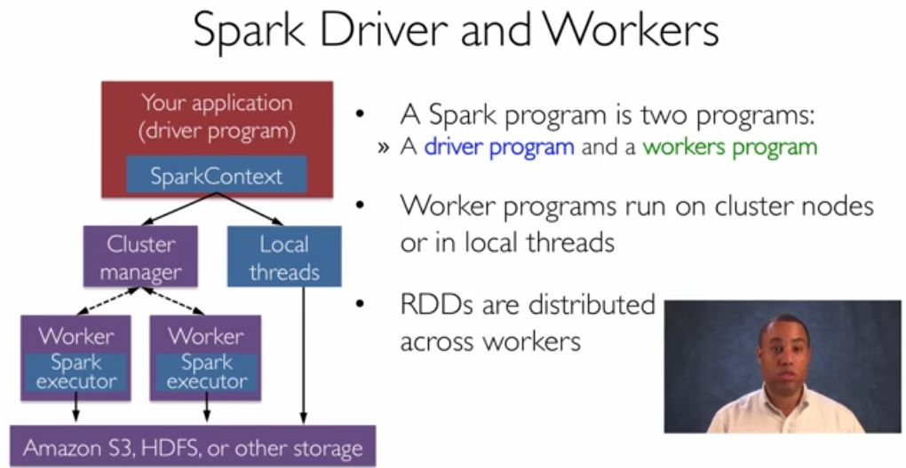

This is a review of Introduction to Big Data with Apache Spark (CS100.1x), the first in a two-part series introducing the big data processing engine, Spark.
The one month-long MOOC was offered on edX for the first time in June 2015, and its sequel, Scalable Machine Learning (CS190.1x) is currently under way.
[caption id="attachment_2116" align="aligncenter" width="1020"] Still from a lecture in "Introduction to Big Data with Apache Spark"[/caption]
{kind=link}
Learning a new syntax is an unavoidably dry exercise; despite that handicap, the course lectures are watchable and directly relevant to the labs.
Of course, the fun is in applying that hard-earned knowledge...actually, the learning curve is quite shallow, since a dozen or so basic Spark commands are enough to get you started on a simple project, e.g. see an example on github.
The weekly assignments, provided in the form of IPython notebooks, are well-designed, keeping the focus on learning Spark (rather than coding/debugging python) by providing a skeleton of pre-filled code chunks for each assignment.
The labs are:
- word counting all of Shakespeare’s plays
- NASA Apache web server log analysis
- entity resolution of Google and Amazon product listings
- collaborative filtering to make movie recommendations
Students only have to fill in sections of code that relate to the application of Spark. The structure of the assignments thus results in a gratifying amount of payoff for a small amount of work. You don’t need to be fluent in python--far from it--in order to complete the labs, and can likely pick up what you need along the way if you have experience in some other programming language.
I did find the labs to be much more time-consuming than the course estimates, partly because:
- Error tracebacks in Spark tend to hit you like a great wall of angry text, and are hard to parse (to the uninitiated, at least).
- I was more hesitant to experiment/test freely in the IPython Notebooks out of a fear that some unsanctioned code would cause problems with the tetchy lab Autograder. However, it never did freeze on me, although it did for others who were too liberal in their use of collect() statements.
The instructors were extremely responsive to student questions and nimble to implement improvements in real-time. I'm sure the course will continue to improve over the next iterations.
A few lucky students, including myself, were randomly selected to have access to the Databricks cloud-computing platform for the duration of the course.
Although the procedures for running Spark in the standard course software (a prepared virtual machine) and Databricks cluster are almost identical, having cloud minions doing your bidding may tickle megalomaniacal tendencies you didn't know you had.